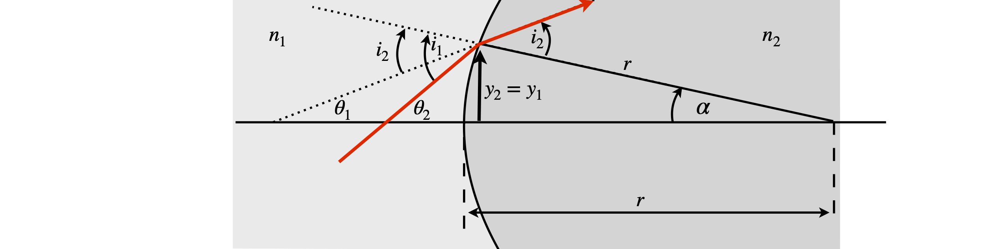
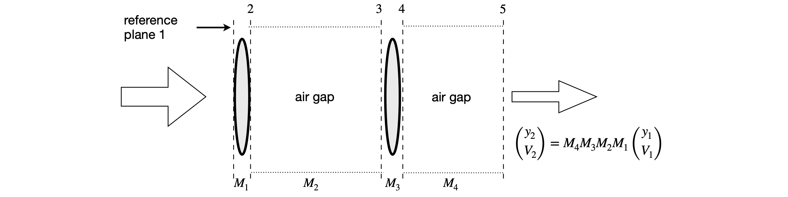

Matrices in optics and designing laser cavities¶
# import all python add-ons etc that will be needed later on
%matplotlib inline
import numpy as np
import matplotlib.pyplot as plt
from sympy import *
init_printing() # allows printing of SymPy results in typeset maths format
plt.rcParams.update({'font.size': 14}) # set font size for plots
10 ABCD matrices.¶
Chemists are among the largest group of laser users and it is not often appreciated that, nowadays, not only is nearly all spectroscopy performed with lasers, but also that most chemical kinetics measurements use lasers to initiate and follow reactions. Lasers are also widely used to produce fluorescence from dye molecules bound to DNA or proteins and to generate intrinsic fluorescence or Raman scattering from tryptophan and tyrosine residues in proteins. Ultra-short femtosecond duration lasers are used to probe the excited state reactions of the chromophores in photosynthetic antennas and reaction centres, to study the photo-isomerization in vision and in bacteriorhodopsin (a light-driven proton pump), and in other chromophore containing proteins such as photoactive yellow and green proteins. Fluorescence excited by femtosecond and picosecond duration lasers in single and two photon events is used to image living cells. Some basic knowledge of optics is now definitely required to do research in many areas of the chemical and bio-sciences. It is essential to be able to understand for example, how to build a stable laser, how much light to deliver as watts/cm\(^2\) into a sample, and to be able to work out what lenses or mirrors are needed to collect as much fluorescence as possible from a sample. And to this end, a very simple matrix method of analysing the behaviour of simple or complex optical systems has been developed and is described in this section. The books, Introduction to Matrix Methods in Optics (Gerrard & Burch 1975) and Lasers (Siegman 1986) provide a detailed description of these methods and the latter book considerably more than this.
The matrix method is based on following a two-component vector through an optical system. The first element of this vector represents the height of a light ray above the (optic) axis and the other element is the angle the ray makes to this axis. The optic axis is the direction the ray takes through the centre of all the optical elements. The angle the ray makes must be small enough, \(\lt 6^\text{o}\), to allow the approximations \(\tan(\theta) \approx \theta\) and \(\sin(\theta) \approx \theta\) to be true, and this is good enough for most applications. This is known as the paraxial approximation. The basis set for the vector is \((y, \theta)\)}. The calculation is always contained between pairs of reference planes and you have to decide where to put these based on the problem at hand.
Figure 36. Definitions of input and output rays and reference planes.
The input ray enters at a height \(y_1\) above the optic axis at reference plane 1 and moves at angle \(\theta_1\) to the optic axis as shown in figure 36. Using the paraxial approximation, the output ray at reference plane 2 having passed through one or more optical elements is related by a linear transformation, hence a matrix, to the input ray at the input reference plane as
where the \(ABCD\) matrix is defined always to have a unit determinant
The values of the elements A, B, C, and D determine the optical properties of a single element, such as a thin lens, an air gap, or a curved surface. Although two reference planes determine where to start and end the calculation, when several optical elements are stacked together, additional reference planes can be added to determine where one ABCD matrix starts and the other finishes. When many elements are present, the ABCD matrices are multiplied together to produce a final 2 × 2 matrix whose ABCD values are those of the whole optical assembly. The form of the individual ABCD matrix is tabulated for various individual optical elements; see Gerrard & Burch (1975) or Siegman (1986). The ABCD matrices for three optical elements are:
The gap is just that: an air gap or a piece of glass of length \(d\) with refractive index \(n\). The refractive index of air is practically 1, and can be taken to be 1 for the purpose of almost all calculations. The refractive index of different glasses depends on their composition but \(\approx 1.52\) is a typical value for crown glass. Quartz has a smaller value of \(\approx 1.48\) and glasses containing rare earth elements, values of \(\approx 1.8\). Water has a refractive index of \(1.33\) at room temperature, and liquids with more polarizable atoms such as CCl\(_4\) have higher values \(\approx 1.6\). The reflection matrix shown is for a positive, concave, or focusing mirror with radius of curvature \(-r\). A positive radius of curvature \(+r\), by convention, applies to a negative mirror, which is defined when the ray approaches from the left and meets a convex mirror surface. This is the convention shown in figure 37, where the surface is convex to the incoming ray starting at point Q. The radius \(+r\) is shown as the line SR, see also figure 43. The focal length \(f\) of a mirror is half the radius of curvature and it is often easier to use this rather than \(r\).

Figure 37. Ray diagram showing refraction at a lens surface with a radius \(r\) made of glass with refractive index \(n_2\); the medium outside the lens, say air, has a refractive index \(n_1\). The angles and surface curvature are greatly exaggerated in the diagram. (Based on a figure in Gerrard & Burch 1975.)
The derivation of each ABCD matrix is not difficult, but it is unnecessary to know how this is done for every optical element. Therefore the principle is illustrated by calculating the matrix for a single lens surface, as shown in figure 37. For each optical element, such as a surface or air gap, one reference plane at some position on the x-axis is chosen at which the input beam must be defined, and a second reference plane positioned where the properties of the output beam are required. In the example below, these two planes, \(rp_1, rp_2\) are coincident at the lens surface.
We aim to find equations describing \(y_2\) and angle \(\theta_2\) in terms of \(y_1\) and \(\theta_1\) and do so with a reference plane where the beam intersects the lens and follow the derivation in Gerrard & Burch (1975).
By Snell’s law of refraction
where \(i_1\) and \(i_2\) are, respectively, the angles of incidence and refraction measured from the normal to the surface. At small angles, \(n_1i_1 = n_2i_2\). The refractive indices are \(n_1\) outside the lens, and \(n_2\) for the lens’ glass. The angles of a triangle add up to \(180^\text{o}\); therefore, by the external angle theorem on triangle \(QRS\),
and on triangle \(PRS\)
Combining equations gives the equation for \(y_1\),
and using the fact that at the surface \(y_2 = y_1\) the matrix equation for the surface is
Multiplying the angle by the refractive index \(n\theta\) in the vector makes all matrices unitary; often the notation \(V = n\theta\) is used and this is done because, by Snell’s law, \(V\) remains unchanged as the ray crosses a boundary from one medium to another. The \(ABCD\) matrix for a surface of radius \(r\) is
with refractive index \(n_1 \) on the left of the surface and \(n_2\) on the right.
If there are several optical elements, the effect of a ray passing through several of them is calculated by multiplying their \(ABCD\) matrices in order, as shown in figure 38. The reference planes are placed around each optical element but the first and last, which are often gaps, are determined by where the object (ray input) distance and image (ray output) distances are required to be. If a thick lens is present, three thin lens matrices would have to be used, which are those of two surfaces separated by a gap containing the glass. The multiplication order is always that in which the light passes through the elements; for example if \(M_1\) is the matrix next to the input reference plane (plane 1), it is the right-hand matrix in the multiplication; similarly, the output matrix is always placed on the left-hand side. In figure 38 the right-hand matrix is an air gap and the properties of the beam are those that exist at the reference plane, in this case some distance from the last lens. This might be the focal point of the lens arrangement if the light entering the first lens is parallel.
The different properties of the \(ABCD\) elements, determine what optical properties we observe. This is explained in the next section.

Figure 38. Matrices for lens-gap-lens-gap arrangement. The values \((y_1,V_1)\) are measured on the left of the diagram.
10.1 Understanding the \(ABCD\) matrix¶
The elements of the \(ABCD\) matrix have the following meaning when each in turn is made equal to zero. The other elements are unchanged.
(i) Making \(D = 0\) means that the first (left-most) reference plane must be at the focal point so that rays leave the optical elements parallel to one another.
(ii) Making \(A = 0\) puts the final reference plane at the focal point so the rays enter the optical arrangement parallel to one another.
(iii) If \(B=0\), this produces the object-image relationship, figure 39. The object is magnified by the amount of element \(A\) and brought to a focus at the final reference plane. The number \(1/D\) is also the magnification.
(iv) Making \(C = 0\) ensures that both input and output rays are parallel but with angular magnification \(D\). This is the telescopic relationship and the system is called afocal.
As an example of using the matrix methods, the Lens Maker’s formula
will be derived, where \(u\) is the object distance from a lens, \(v\) the image distance, and \(f\) the focal length.
The \(ABCD\) matrix for a thin lens of focal length f is
and for an air gap of length \(d\) is
The total \(ABCD\) matrix is calculated and, by making element \(B = 0\), produces the thin lens (or lens maker’s) formula. A diagram of the arrangement is shown below.
The matrices are written down in the order of rays passing through the elements and are in the reverse order to that drawn on the diagram; place the matrix of the first gap on the right, to its left that for the lens then final gap \(v\) making the \(ABCD\) matrix. The matrix with reference plane 1 is always placed on the right.
Figure 39. Arrangement for calculating object-image relationship for a thin lens.
Multiplying by hand gives
As a check, the determinant should be \(1\). The calculation is
When \(B = 0\), the object-image relationship applies, then \(u + v - uv/f = 0\) and rearranging produces the Lens Maker’s formula;
10.2 The laser cavity¶
A laser cavity consists of two or more mirrors with a gain medium sandwiched between them, Figure 40. Usually one of the end mirrors is \(100\)% reflecting and the other mirror, the output coupler, is partially transmitting. This is typically in the range of \(1 \to 10\)% transmitting depending on the type of laser. The gain medium can be a gas, a liquid containing a highly fluorescent dye, such as Rhodamine-6, or a solid, usually a glass doped with a small percentage of luminescent ions, such as Nd\(^{3+}\) or Ti\(^+\). The gain medium is excited either electrically, forming a gas discharge, or from another laser or flash lamp. Most of the fluorescence is lost because it is emitted over all angles, but the laser’s cavity mirrors capture some of it, which is then fed back into the gain medium where amplification caused by stimulated emission occurs. For the laser to work, the photons have to pass back and forth in the cavity indefinitely and can only do so if they follow the same path. This is equivalent to saying that the wave-front reproduces itself at the mirrors after each round trip. The wave-front is the shape of the wave inside the cavity and it has the same curvature as that of the mirror as it reaches it because light must be reflected normally off any mirror if it is to return along the same path. The curvature changes inside the cavity to satisfy this normality condition at the end mirrors. As the beam waist is approached, the curved wavefront becomes a plane wave and then changes to the opposite curvature as it moves towards the other mirror. When the laser beam leaves the cavity, its longitudinal profile is that determined by the cavity and it continuously diverges. The transverse profile of the laser intensity is ideally Gaussian, although lasers with other profiles can be made.
If the cavity is represented by an \(ABCD\) matrix \(\pmb{M}\), and we will define exactly what this will be shortly, then, as the input and output rays must reproduce one another, we can suppose that the input and output can only be related by some constant factor. Furthermore, this value must be the same for one round trip as for \(N\) round trips of the cavity. For one round trip, from equation 18 \(\displaystyle \begin{bmatrix} y_2 \\ \theta_2\end{bmatrix}=\pmb{M}\begin{bmatrix} y_1 \\ \theta_1\end{bmatrix}\). It is true that for \(N\) round trips
therefore some way of finding the \(N^{th}\) power of the matrix has to be used. The method is to use a similarity matrix, which is described in Section 13.4 but before doing this a more physical method rather than a purely mathematical one is used.
If the wavefront reproduces itself after one pass, then it is some multiple of the input, therefore
where \(\lambda\) is a number. For \(N\) round-trips, the number will be \(\lambda^N\). Some conditions will have to be placed on \(\lambda\), but first its values will be calculated. Combining the last equation with equation 18, gives
which has the form of an eigenvalue - eigenvector equation see section 12.13. Rearranging gives
where \(\pmb{I}\) is the \(2\times 2\) unit or identity matrix. To find \(\lambda\) the determinant has to be solved;
the characteristic equation \((A-\lambda)(D-\lambda)-BC=0\) or \(\lambda^2 -(A+D)\lambda+1=0\) because \(AD-BC=1\) therefore
Because the wavefronts must replicate themselves, \(\lambda\) cannot be a real number unless it is unity, which is a trivial result; therefore it follows that \(\lambda\) is purely imaginary. In this case \((A + D)^2 \lt 4\), which means that
Now this is surprising; we do not need to know the values of \(\lambda\) because only equation 24 needs to be obeyed. If it is obeyed, the wavefronts in the cavity replicate themselves and the cavity is stable; if not it is unstable. To design a laser cavity, the first step is to calculate the values of \(A\) and \(D\) that make a cavity stable with the mirror radius of curvature that have been chosen and to plot a graph of the stable region. The next step is therefore to work out an \(ABCD\) matrix for a cavity.
The simplest cavity has two mirrors, as shown in Figures 40 and 41. The cavity is split into several regions by defining a reference plane at each mirror, at the edges of each gap and in the gain medium, which is assumed to have flat surfaces, and can be treated as a gap with a different refractive index. The matrices must allow the photons to travel from the edge of the output coupler to the end mirror and back again, but note that the output mirror is only counted once. The scheme is shown in Figure 41. It is clear from this that the laser beam is not a parallel beam of radiation but is always diverging or converging depending where it is measured. The same beam profile is observed after focusing by a lens, only expanded or compressed depending on the type of lens.
Figure 40. Basic laser cavity
Figure 41 \(ABCD\) matrices for a two-mirror cavity.
The \(ABCD\) matrix \(\pmb{M}\) is made by following a ray from the output mirror and back again; the sequence of matrices is
Notice that mirror 1 is on the right and that each mirror is included only once. The gaps are indicated by the \(G\) matrices. \(G_2\) is the gap produced by the gain medium. To make the calculation simpler, the three gaps can be combined into one. If their optical lengths are \(d_1, d_2/n_2\), and \(d_3\), the total optical length, assuming the refractive index of air is \(1\), is \(L = d + d /n + d\) and the combined gap matrix \(\displaystyle \begin{bmatrix} 1 & L \\ 0 & 1 \end{bmatrix}\). This is the same as multiplying the three gap matrices together The matrices for a gap also commute so that \(G_1G_2G_3 = G_3G_2G_1\). The overall matrix for the cavity is, therefore,
where the focal length of the output coupler mirror is \(f_1\) and that of the high reflector \(f_2\). This can easily be multiplied out by hand, but we will use python/Sympy.
L, f1, f2 = symbols('L, f1, f2')
G = Matrix( [ [1,L],[0, 1] ] )
M1= Matrix( [ [1,0],[-1/f1,1] ] )
M2= Matrix( [ [1,0],[-1/f2,1] ] )
M = G * M2 * G * M1
simplify(M)
AplusD = simplify(M[0,0]+M[1,1])
AplusD
The stability occurs when \(|A + D| \lt 2\) and this can only be calculated when specific values are used. If the optical length of the cavity is \(L = 0.5\) m and the mirrors have focal lengths of \(f_1 =0.1\) and \(f_2 =0.2\) m, then \(A+D=-0.5\), which is clearly going to be a stable cavity. This can be appreciated if a sketch is made. If instead, the cavity is lengthened to 1\( \)m then \(A+D=22\), which will prove not to be a stable cavity as a ray will work its way out of the cavity after a few round trips, thereby limiting any feedback. The boundary between the stable and unstable cavity occurs in the two-mirror cavity when the cavity length is the sum of the mirrors’ radii of curvature, which is twice the sum of their focal lengths. This can be seen from equation (7.25). A quick way to see if a cavity is stable and to work out where the beam waist is going to be is to draw two circles each with each mirror’s radius of curvature and with the centres of the circles separated by \(L - r-1 - r_2\). The beam waist is where the two circles cross.
The calculation of a value for \(\lambda\) was left unfinished; it is not necessary to know this to determine if the laser is stable but it is necessary if the position and value of the beam waist are needed, which they invariably are. We might want to place the gain medium at the beam waist to stand the best chance of getting the laser to work by maximizing the gain. However, this may not always be the best place because if the beam waist is too small the high intensity inside gain medium, which, for example, might be a titanium sapphire crystal may cause this to ‘burn’. A radiation intensity of \(>\gt 10^{10}\) w cm\({-}\)2 can cause breakdown in the crystal or even drill a hole right through it.
Returning to equation 23 and as equation 24 also has to be satisfied, then this is possible if the two eigenvalues \(\lambda\) are
where \(\theta\) is an angle such that \(\cos(\theta) = (A + D)/2\) will satisfy the eigenvalues \(\lambda\).
From a study of the Gaussian beam properties of laser cavities (Gerrard & Burch 1975), the following properties are obtained:
\(\qquad\) Radius of curvature of laser beam at reference plane: \(\displaystyle R=\frac{2B}{D-A}\)
\(\qquad\) Beam radius \(\omega\) at reference plane, (\(\lambda\) here is wavelength): \(\displaystyle \omega=\sqrt{\frac{\lambda B} {\pi\sin(\theta)} }\)
\(\qquad\) Location of neck to left of reference plane: \(\displaystyle z = \frac{(A - D)}{2C}\)
\(\qquad\) Beam waist at neck: \(\displaystyle \omega_0=\sqrt{\pm\frac{\lambda\sin(\theta)} {\pi C} }\)
\(\qquad\) confocal beam length: \(\displaystyle z_0=\frac{\pi \omega_0^2}{\lambda}\)
The last parameter, the confocal beam length, is the length of the region over which the laser is focused in the sense that it is the length either side of the beam waist where the beam increases by \(\approx\sqrt{2}\) . The beam waist at \(z\), a position either side of the focus, is given by
In calculating the beam radii \(\omega_z\) and \(\omega_0\) the \(\pm\) sign is chosen to ensure that the number is real. When cavities that are more complicated are used, it is necessary to use the complex beam parameter to determine the properties of the cavity. This is explained in specialized texts such as Siegman (1986); Gerrard & Burch (1975); Svelto (1982) and Yariv (1975).